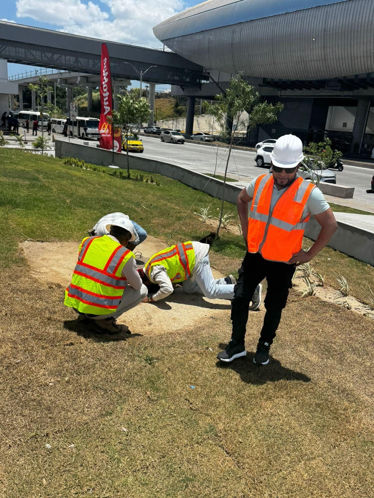
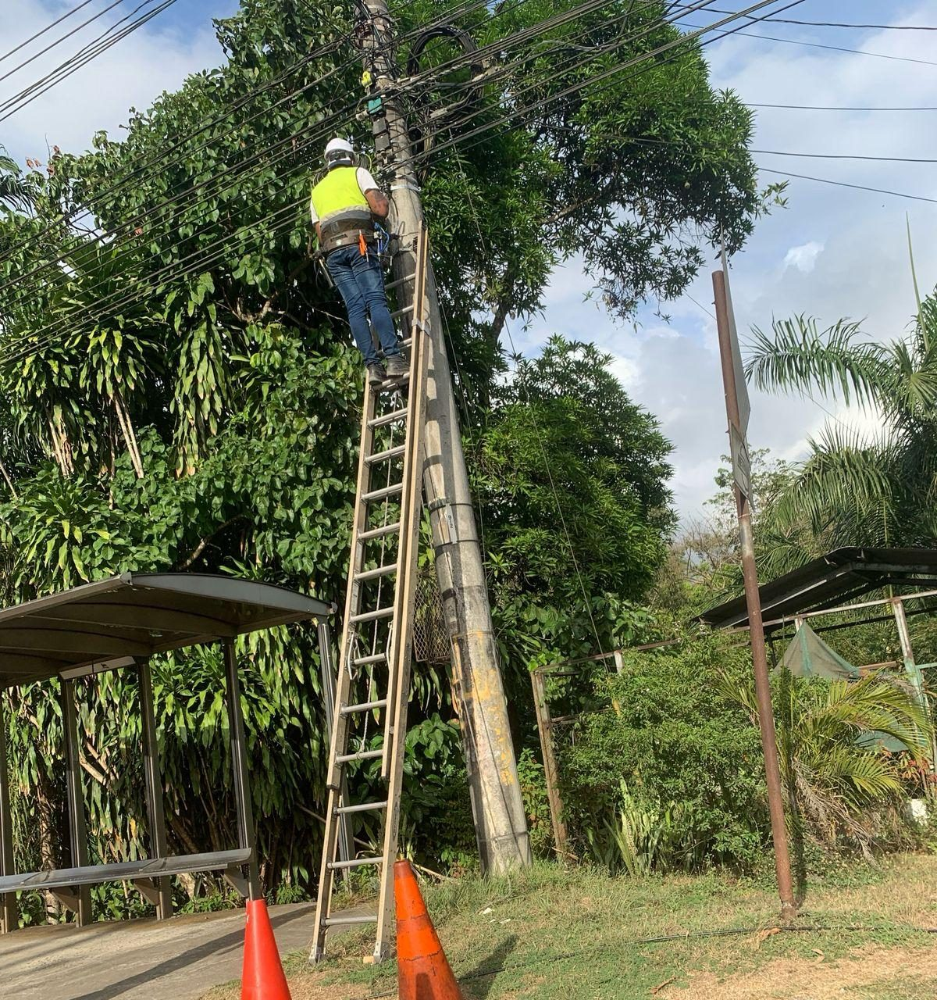
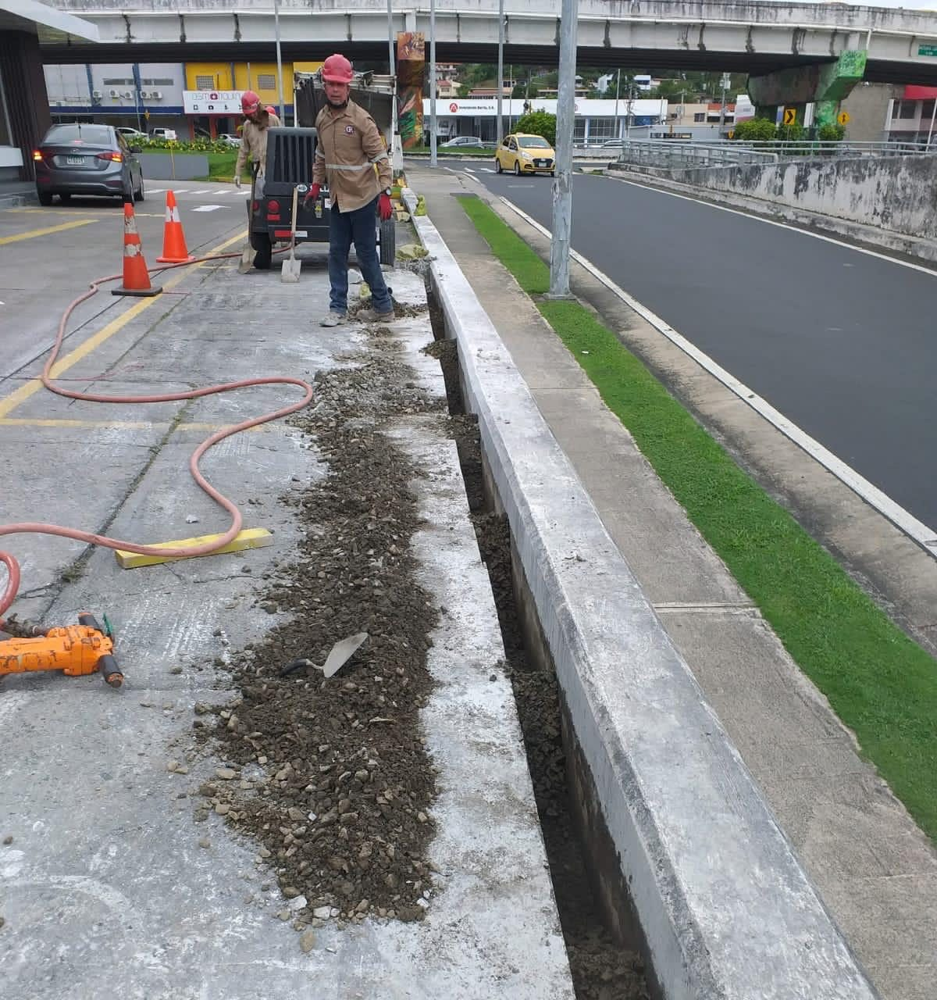
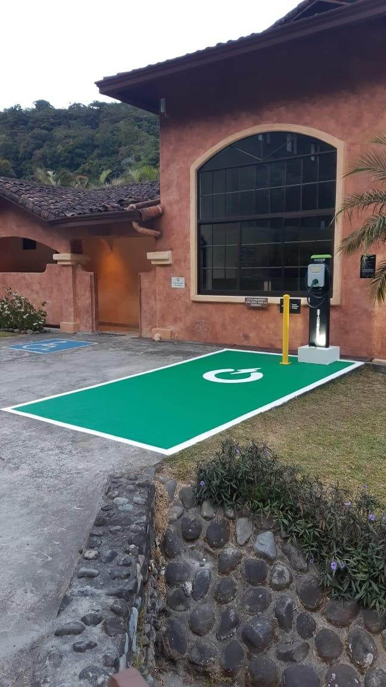
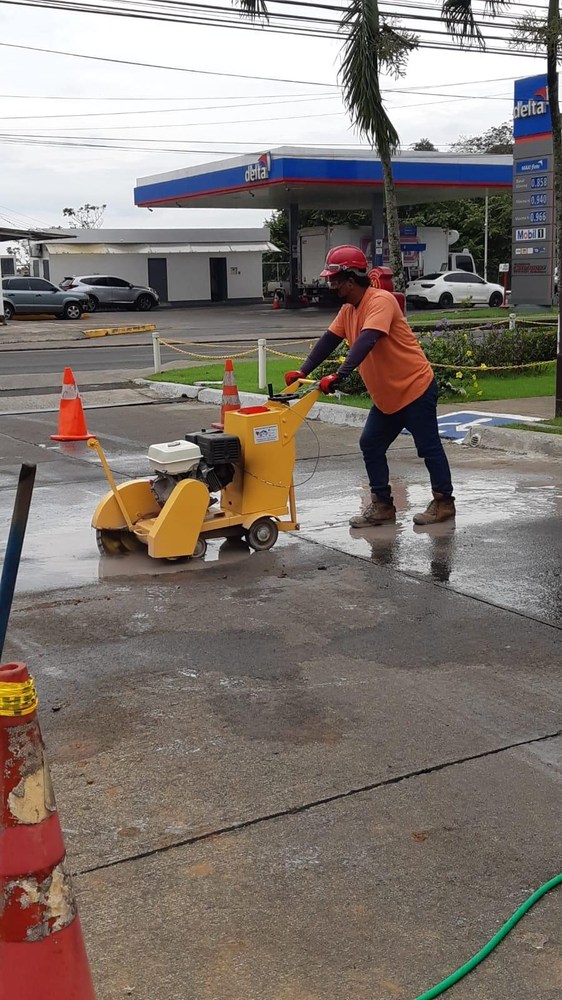
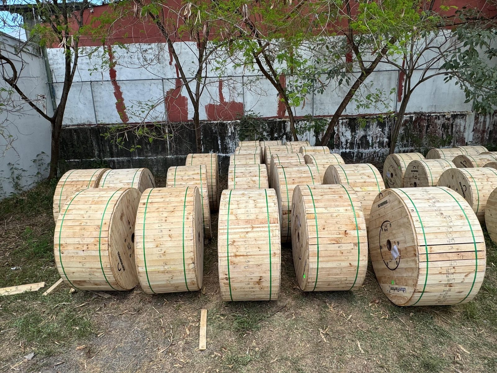
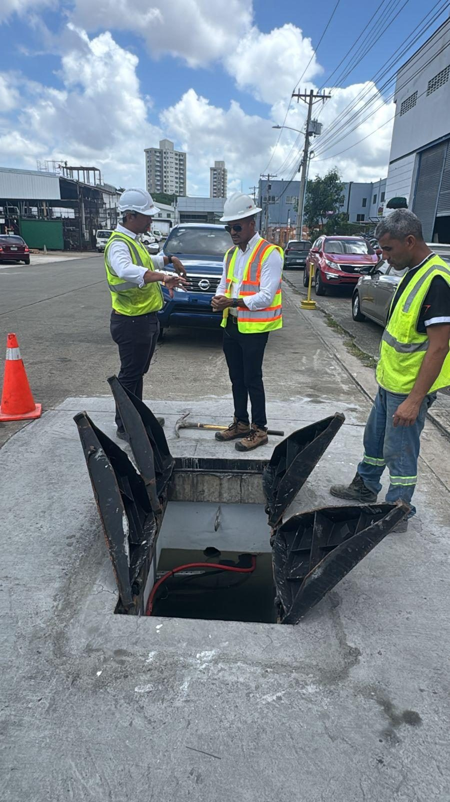
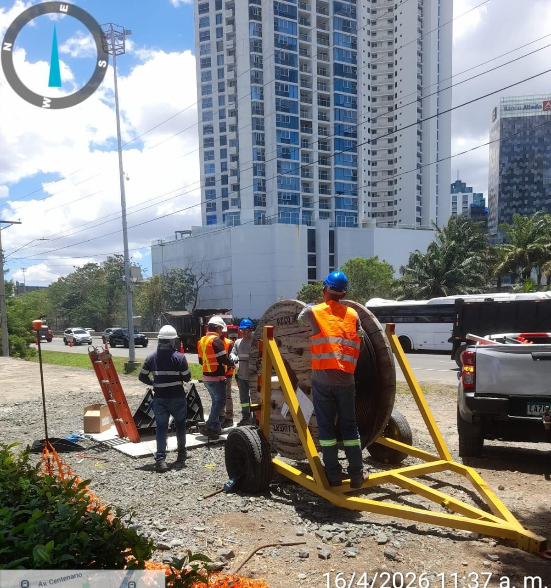

◎
Fibra óptica y planta externa
Instalación, tendido, reparación y mantenimiento de redes de fibra óptica.
Desarrollamos soluciones integrales en fibra óptica, redes soterradas, tendido aéreo, últimas millas, mantenimiento y proyectos llave en mano.
Somos una empresa panameña especializada en proyectos de telecomunicaciones, con experiencia en mercado corporativo y carrier, desarrollo de redes, planta externa, soterrado, mantenimiento, obra civil y soporte técnico.

En Grupo Redes S.A. combinamos recurso humano técnico, experiencia operativa y capacidad de gestión para entregar proyectos de telecomunicaciones de forma segura, ordenada y eficiente.
Nuestro enfoque cubre desde la planificación y permisos hasta la ejecución, instalación, certificación, mantenimiento y entrega final del sitio.
Diseñamos, implementamos y mantenemos soluciones para proyectos corporativos, comerciales, industriales y carrier.
Instalación, tendido, reparación y mantenimiento de redes de fibra óptica.
Rutas en tierra y concreto, microductos, ducterías, cámaras y canalizaciones.
Conexiones finales para clientes corporativos, comerciales e industriales.
Excavaciones, perforaciones, cámaras subterráneas y reposición de pavimentos.
Mediciones de potencia, inspecciones, ubicación de puntos y soporte técnico.
Instalación y soporte de cargadores eléctricos y trabajos eléctricos asociados.
Nuestra experiencia incluye soterrado, tendido aéreo, obra civil, instalación de equipos, supervisión técnica y adecuación de sitios.

Instalación y mantenimiento de infraestructura aérea para redes de telecomunicaciones.

Construcción de rutas, zanjas, ductos y trabajos en concreto para redes soterradas.

Adecuación e instalación de infraestructura para estaciones de carga vehicular.

Trabajos civiles para la preparación e instalación de infraestructura técnica.

Gestión de materiales, cableado, herrajes y componentes para redes ópticas.

Revisión de cámaras, rutas, ductos y puntos de conexión en planta externa.

Cuadrillas técnicas para ejecución de proyectos de fibra óptica en campo.
Coordinación, inspección y seguimiento para asegurar calidad en cada etapa.
Grupo Redes S.A. cuenta con experiencia en redes de telecomunicaciones, proyectos soterrados, últimas millas, mantenimiento, inspecciones, soporte técnico y soluciones llave en mano.
Nuestro equipo puede apoyarle desde el levantamiento inicial hasta la ejecución y entrega final.
Complete el formulario o contáctenos directamente. Reemplace estos datos por el teléfono, correo y dirección real del cliente.